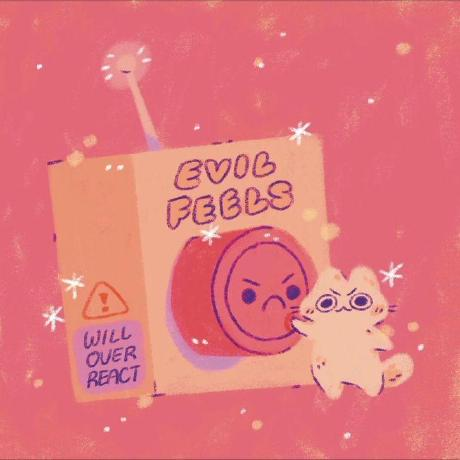

Nós, um grupo inovador de quatro desenvolvedoras, unimos nossas habilidades para criar um site dedicado à venda de chocolates diversos. Utilizando HTML para estruturar o conteúdo, CSS para oferecer um design elegante e atraente, e JavaScript para garantir uma experiência interativa e personalizada, conseguimos construir uma plataforma que destaca a variedade e qualidade de nossos produtos. Cada detalhe do site foi planejado para assegurar que o processo de compra seja intuitivo e agradável, refletindo nosso compromisso com a excelência em design e funcionalidade. O resultado é uma experiência de compra envolvente, onde a paixão por chocolates e a tecnologia se encontram para oferecer sabores verdadeiramente únicos.
